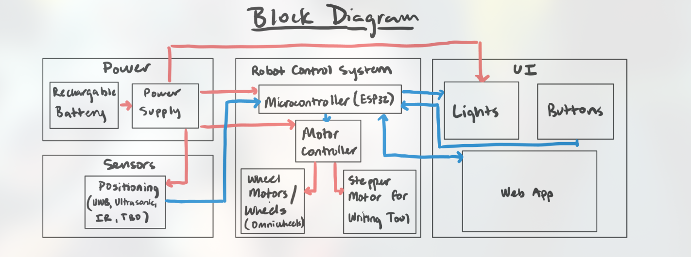
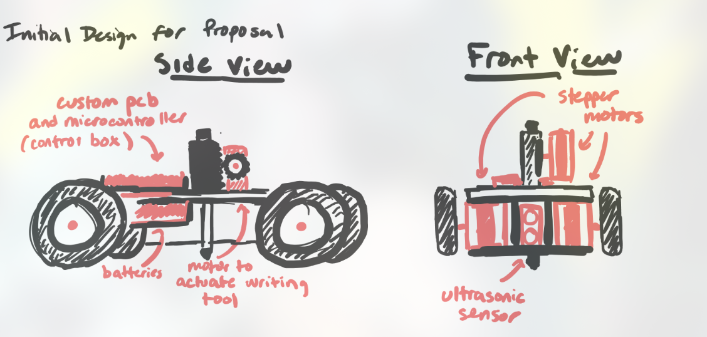
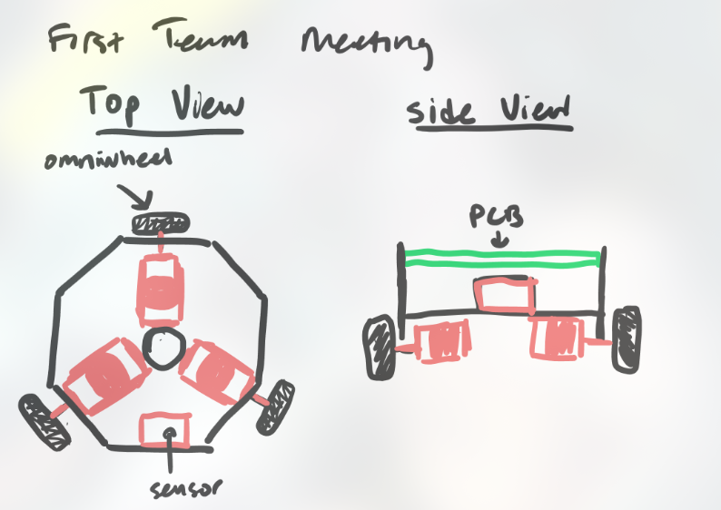
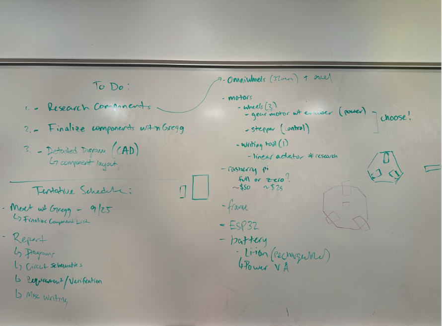
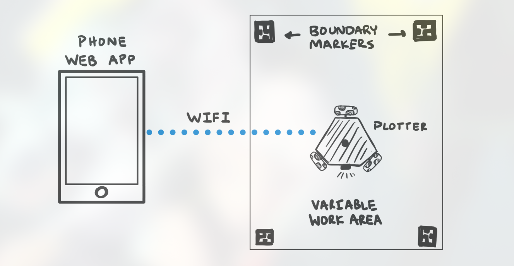
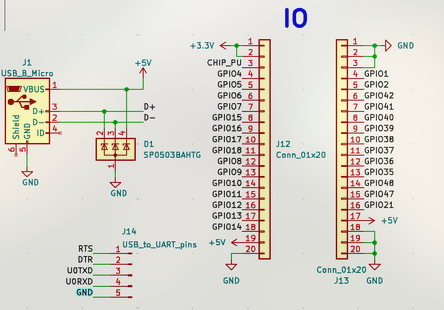
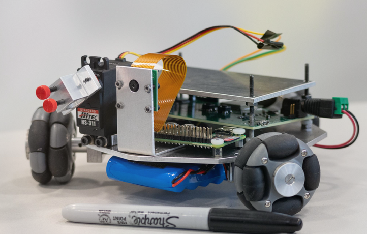
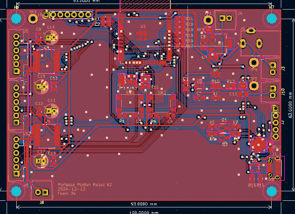

Notebook Entry Lab Week of 9/16/2024
Objectives
- First TA meeting with dongming
- Went over our project proposal, what to include in design review1
Progress
-
Discussed initial project ideas and received feedback on scope and feasibility.
-
Noted requirements for the design review presentation, including subsystem specifications and tolerance analysis.
We also started on figuring out final design templates so that next week we can talk it over with Gregg
This was the block diagram we used (courtesy of my partner mjpaul3) for discussion this week: 
TA meeting 9/17
During the TA meeting, the following feedback and action items were discussed for the design document:
-
Design Document Feedback:
- Clearly labeled the problem and solution sections for better clarity.
- Added visual aids and ensured the overall design was presented at a high level.
- Updated the block diagram:
- Labeled all lines properly to indicate signal flow.
- Used appropriate software tools to create a clean and professional diagram.
- Provided a subsystem overview, detailing each component's role.
- Outlined subsystem requirements to meet functional and performance goals.
-
Tolerance Analysis:
- Included proof of design tolerances:
- Calculated motor torque requirements to handle the expected load.
- Verified the battery's capacity to ensure sufficient power for the system.
- Conducted directional calculations to ensure the robot's motion is within the desired limits.
- Included proof of design tolerances:
-
Ethics and Safety:
- Documented potential safety concerns and proposed mitigation strategies.
- Compiled a reference page with citations for all sources used in the design.
-
Examples for Reference:
- Used SP 2024 Team 19's TA Feedback and FA 2023 Team 3's Design Document as examples of strong documentation.
Next Steps
- Finalize updates to the block diagram and integrate them into the design document.
- Conduct additional testing to validate motor torque and battery capacity calculations.
- Prepare the design document for the next TA review session.
Notebook Entry Lab 9/23/2024
Objectives
- Visit the machine shop for initial design discussions with Gregg.
- Determine motor requirements for the project.
Progress
On 9/12, my partner Matt Paul (mjpaul3) decided to implement a basic 4-wheel design remniscient of the main chassis we used in ECE110 
On 9/16, we decided to implement this final design, which was considerably shorter compared to the initial design we found 4 days earlier, which would be considerably less expensive compared to the first design (less wheels and motors), and also lends itself to more slick motion thanks to the omniwheels.` 
On 9/24, we decided to brainstorm what we wanted to make for the design doc:

Notebook Entry Lab 9/30/2024
Objectives
- Finalize Design Document
- Finalize subsystem requirements and start ordering parts.
Progress
- Defined the high-level system architecture, including motor control, sensor integration, and Wi-Fi communication.
- Ordered the ESP32, motor drivers, and gear motors for testing.
- Created initial CAD models for mechanical design to ensure component fit.
This was the main design we used for understanding the web app communications: 
TA meeting 10/1
- Main deadline is to sign up for peer review by tomorrow (10/2)
- Requirements/Values not specified sufficiently yet, so we needed to fix that
- Our current schematic model wasn't enough, so we needed to specify more; for instance, our IO interface wasn't properly addressed and we didn't attach the correct footprint yet: 
Main todo: create slideshow for design review
10/3: Schedule fixing
- All we did here was fix out our schedule that we will use; this was mainly to brainstorm our workflow
- We added details to design doc
- Understand software testing/debugging workflow; here I decided that we will use PID
Notebook Entry Lab 10/07/2024
Objectives
- Begin PCB design calculations for PCB review.
- Perform power analytics calculations to ensure all subsystems are properly powered.
Progress
10/11 meeting:
-
PCB Design Calculations:
- Reviewed the application circuit for the TPS62140DCLR voltage regulator.
- Calculated resistor divider values ( and ) to achieve an output voltage () of 3.3V.
- Used the formula:
Result:
- Used the formula:
Result:
- Verified that the selected capacitor values meet the TPS62140DCLR's application guidelines.
-
Power Subsystem Analysis:
- Measured current requirements for each subsystem:
- ESP32: 300mA.
- Plotter Car Control Subsystem: 500mA.
- Motor Subsystem: Calculated based on servo and DC motor driver requirements.
- Ensured the battery and voltage regulator could supply sufficient current for all subsystems under peak load conditions.
- Measured current requirements for each subsystem:
-
Updated Block Diagram:
- Created a detailed block diagram to map the power flow and subsystem interconnections.
- Incorporated feedback from previous TA meetings to ensure all connections were labeled clearly.
-
Component Placement Considerations:
- Added a optional capacitor to reduce noise in the power line.
- Verified placement for efficient routing of power and signal lines, especially for the ESP32 and motor drivers.
Next Steps
- Finalize the PCB layout for review, focusing on minimizing noise and ensuring reliable connections.
- Simulate the power system under various loads to confirm voltage stability.
Notebook Entry Lab 10/14/2024
Objectives
- Order parts, get PCB design finalized
Progress
10/15 TA Meeting:
- We learned that multiple PCB orders are fine; we have enough time
- Target Round 1 hopefully
- Currently, we need to work on PCB
Notebook Entry Lab 10/21/2024
Objectives
- Count and finalize components for ordering, including resistors, capacitors, and inductors.
- Prepare the PCB design with necessary footprints for all components.
- Begin testing motor drivers and Raspberry Pi camera functionality.
- Develop and refine the ESP32 Wi-Fi interface and connections for edge-of-board placement.
Progress
-
Component Selection for PCB:
- Identified required values for resistors, capacitors, and inductors:
- Capacitors: , , , , .
- Resistors: , , , , .
- Inductors: .
- Included electrolytic capacitors for critical filtering applications, particularly .
- Identified required values for resistors, capacitors, and inductors:
-
PCB Preparation:
- Reviewed the placement of IO, power, ESP32, motor drivers, and sensors on the PCB layout.
- Noted pin configurations to optimize edge-of-board connectivity and simplify wiring during assembly.
- Exported necessary component footprints for use in PCB design software.
- From TA 10/22 meeting: PCB V1 seemed good; it's just that the PCB footprint had the ESP32 wifi antennae on board; this might cause issues
-
Motor Driver Testing:
- Began testing the motor drivers using the ESP32. Confirmed basic operation with servo motors.
- Encountered minor issues with pin connections, which were resolved during setup.
-
Raspberry Pi Camera Testing:
- Tested the Raspberry Pi camera for position data integration. Results were satisfactory, with clear image captures and reliable interfacing.
- Ensured compatibility with IMU for future position data calculations.
-
ESP32 Wi-Fi Interface:
- Started developing the ESP32 Wi-Fi interface, focusing on stability for communication with the web app.
- Ensured basic functionality to handle commands such as shape selection.
-
Planning for Next Week:
- Outlined steps for Week 10/27:
- Finalize ordering of components.
- Develop a web board mockup.
- Continue testing motors and their integration with the ESP32.
- Work on programming ESP32 for advanced motor functions and servo tool control.
- Outlined steps for Week 10/27:
Next Steps
- Complete the PCB layout and simulate the power subsystem to ensure stability under load.
- Continue testing the motor drivers and refine motor control algorithms.
- Work on integrating the Raspberry Pi camera with the web app for position data feedback.
Notebook Entry Lab 10/28/2024
Objectives
- order parts
- figma mockup of web board
- contact Gregg to get chassis done
- test motor
Progress
- We received chassis from Gregg:

Next steps:
Get devboard work
Notebook Entry Lab 11/04/24
Objectives
- Address feedback on PCB design.
- Make necessary changes to improve the PCB layout and functionality.
Progress
The following changes were made to the PCB design based on feedback received:
- Moved the ESP32 to the edge of the board to facilitate easier connections.
- Corrected the footprint for the 6-5V power supply and UART bridge.
- Added power connections for the Raspberry Pi.
- Included test points on the PCB for debugging and monitoring.
- Added encoder connections for the motors to support precise feedback.
- Ordered additional buttons for control purposes.
- Exported pins for the ESP32 and UART for extended connectivity.
- Added Raspberry Pi GPIO pins to support interfacing.

These changes ensure that the PCB layout supports all system components effectively and meets the design requirements.
Next Steps
- Begin testing the updated PCB with connected components.
- Verify the functionality of the newly added encoder connections and Raspberry Pi GPIO pins.
- Ensure that all exported pins are accessible and working as intended.
Notebook Entry Lab 11/11/24
Objectives
- Finalize motor identification and connections for the control system.
- Update the parts list with the required capacitors, resistors, and inductors for PCB design.
- Review and refine the general layout of the robot components, including battery, Raspberry Pi, and servo placement.
Progress
-
Motor Identification and Wiring:
- Identified motor pins and their corresponding connections:
- OUT1, OUT2, and OUT3 mapped to motor output pins.
- CF1 and CF2 for current feedback.
- 3.3V and GND for power.
- Verified the PWM signals from the controller and reviewed the output waveform for consistency with the desired motor behavior.
- Identified motor pins and their corresponding connections:
-
Updated Parts List:
- Capacitors (C): , , , .
- Resistors (R): , , , , , , .
- Inductors (L): .
- Verified counts and confirmed all necessary components are available for assembly.
-
Component Layout:
- Completed a detailed layout of the robot:
- General layout includes the top and bottom placements.
- Raspberry Pi mounted at the top alongside the servo for camera movement.
- PCB and battery located at the bottom for weight distribution.
- Ensured all components are securely mounted with proper clearance for screws and accessibility.
- Completed a detailed layout of the robot:
(diagrams courtesy of partner mjpaul3)


-
Design Dimensions:
- Referenced motor dimensions and wheel configurations directly from the datasheets.
- Integrated omniwheels and servo clearances into the layout to ensure smooth operation.
-
Battery and Power Connections:
- Finalized the battery placement and connections.
- Ensured compatibility with power regulators and designed for easy accessibility during operation.
Next Steps
- Test the motor drivers and PWM control to confirm functionality with the updated connections.
- Begin assembling the robot with the finalized layout and components.
- Simulate and verify power stability across all subsystems before moving to integrated testing.
Notebook Entry Lab 11/18/24
Objectives
- Set up a test bench on the development board for basic servo motor control code.
- Verify the functionality of servo motor control using PWM signals with an ESP32.
Progress
This week, I focused on implementing and testing servo motor control using an ESP32 development board. The servo was controlled through a PWM signal configured with a 50Hz frequency and 14-bit resolution. Below are the key components of the implementation:
Code Explanation
1. Pin Configuration
The servo was connected to GPIO 13. Additionally, GPIOs 36, 35, and 1 were set to always output HIGH to stabilize auxiliary components.
// Pin definitions
#define SERVO_PIN 13
#define SERVO_HIGH_1 36
#define SERVO_HIGH_2 35
#define GPIO_HIGH_1 1
2. PWM Timer Configuration
A PWM signal with a frequency of 50Hz (20ms period) was used to control the servo motor. The timer was set to 14-bit resolution, allowing a duty cycle range of 0 to 16383.
ledc_timer_config_t ledc_timer = {
.speed_mode = PWM_MODE,
.duty_resolution = PWM_RESOLUTION,
.timer_num = PWM_TIMER,
.freq_hz = PWM_FREQ,
.clk_cfg = LEDC_AUTO_CLK
};
esp_err_t timer_err = ledc_timer_config(&ledc_timer);
3. Duty Cycle Calculation
The pulse width for the servo was calculated based on the desired angle, mapped to the servo’s minimum and maximum pulse widths (544µs to 2400µs). The calculated pulse width was converted to the appropriate duty cycle for the PWM signal.
Mathematically:
For example:
- At 0°: Pulse width = 544µs, duty = 445.
- At 180°: Pulse width = 2400µs, duty = 1966.
4. Angle Testing
The setServoAngle function was implemented to move the servo to specified angles between 0° and 180°:
void setServoAngle(uint8_t angle) {
// Convert angle to pulse width
uint32_t pulseWidth = SERVO_MIN_PULSEWIDTH + (((SERVO_MAX_PULSEWIDTH - SERVO_MIN_PULSEWIDTH) * angle) / 180);
// Convert pulse width to duty cycle
uint32_t duty = (uint32_t)((float)pulseWidth * 16383.0f / 20000.0f);
// Update duty cycle
ledc_set_duty(PWM_MODE, PWM_CHANNEL, duty);
ledc_update_duty(PWM_MODE, PWM_CHANNEL);
}
The loop function tested the full range of motion by moving the servo to angles 0°, 45°, 90°, 135°, and 180°, pausing 2 seconds between each move.
Observations
- The servo motor successfully moved to the specified angles as expected.
- Duty cycle calculations matched the required pulse widths for standard servo motors, ensuring smooth operation.
- Minor debugging was required to correct initial configurations of the
SERVO_HIGHpins and ensure proper timer initialization.
Debugging and Improvements
-
Timer Configuration Errors:
Encountered a failure inledc_timer_config. Resolved by ensuring correct timer frequency and clock settings. -
Servo Jitter:
Observed slight jitter at certain angles, likely due to noise in the PWM signal. Planned to add capacitors for hardware noise reduction. -
Angle Limitation:
Restricted the range to 0°–180° for compatibility with the servo’s specifications. Additional testing was done to ensure smooth operation at boundary values (0° and 180°).
Future Steps
- Optimize signal stability by testing with hardware filtering.
- Implement feedback control using a potentiometer for precise angle measurements.
- Adapt this code to work with PCB schematic
Notebook Entry Lab 11/25/24
Objectives
- Checked and developed the mathematical model in PID.
Progress
Kinematics Model
The mathematical model in kinematics.cpp was derived based on the robot's omniwheel configuration, utilizing the velocity components in the , , and rotational () directions. The equations for the wheel linear speeds were:
Here:
- and are the linear velocities in the and directions.
- is the angle of the -th wheel relative to the robot's frame.
- is the angular velocity of the robot.
- is the wheelbase radius.
The wheel linear speeds were converted to angular speeds using the relationship:
Where:
- is the diameter of the wheel.
The angular speeds were then converted to RPM using the formula:
This ensured that the motor speed commands were proportional to the desired robot movement.
PID Model
The PID model was implemented to control the motor speeds. The PID controller equation used in pid_control.cpp is:
Where:
- is the control signal (PWM value).
- is the error, calculated as:
- , , and are the proportional, integral, and derivative gains, respectively.
The pseudocode for the PID implementation was as follows:
int computePID(int motor, float setpointRPM, float actualRPM) {
error = setpointRPM - actualRPM;
integral += error;
derivative = error - previousError;
previousError = error;
output = Kp * error + Ki * integral + Kd * derivative;
return constrain(output, -MOTOR_MAX_SPEED, MOTOR_MAX_SPEED);
}
Mathematical Breakdown
-
Proportional Term ():
- Provides immediate response proportional to the current error.
- Adjusted to minimize overshoot during testing.
-
Integral Term ():
- Accounts for cumulative errors over time.
- Avoided integral windup by clamping the output in the
computePIDfunction.
-
Derivative Term ():
- Dampens the response by anticipating future errors.
- Balanced to prevent excessive delay in motor responses.
This model ensured smooth and accurate motor control, aligning with the robot's motion requirements.
Issue
- Last week's servo motor code didn't work with the PCB chip; we had to use the reduntant GPIO pins for the servo to work.
- We would be able to fix this issue with a PCB v3, although it is quite late
Notebook Entry Lab 12/02/24
Objectives
- Finish Kinematics code + PID
- Debug and test kinematics
- Finish Communication with robot to Web App at demo level
- Create github repo for code
Progress
12/02 Evening
-
Finalized Kinematics Code
- Verified the mathematical model in
kinematics.cpp. - Tested conversions from linear to angular velocity using wheel parameters.
- Debugged issues such as incorrect wheelbase radius or wheel diameter values and resolved unit mismatches causing overflow errors in
wheelSpeedscomputation.
- Verified the mathematical model in
-
Tuned PID Controllers
- Used test scenarios with motors to adjust
Kp,Ki, andKdvalues. - Fixed instability caused by improper proportional (oscillation) and derivative (sluggish response) tuning.
- Addressed integral windup for large errors.
- Used test scenarios with motors to adjust
12/03 Morning
-
Tested Core Functions
- Unit tested functions like
moveForward,rotateRobot,drawCircle, anddrawSquare. - Debugged timing calculation issues in
esp_timer_get_time()that caused skipped execution or unexpected delays. - Resolved alignment drift in
rotateRobotby calibrating encoder accuracy.
- Unit tested functions like
-
Validated Web App Communication
- Verified that the Flask app and ESP32 communicated correctly.
- Ensured the
sendIPToFlaskServerfunction registered the ESP32 as expected. - Tested the
/drawPOST endpoint to confirm proper JSON payload handling. - Fixed deserialization errors in
web_server.cppandapp.py.
12/03 Evening
-
Performed Integration Testing
- Integrated kinematics, motor control, and PID feedback loops with drawing commands like
circle,square, andtriangle. - Resolved issues with PWM values exceeding limits (
MOTOR_MAX_SPEED) due to PID outputs. - Fixed motor misbehavior caused by incorrect encoder ISR implementations.
- Integrated kinematics, motor control, and PID feedback loops with drawing commands like
-
Refined Web UI
- Finalized login/logout workflows in
app.pyand enforced single-user session rules.
- Finalized login/logout workflows in
12/04 Early Morning
-
Created GitHub Repository
- Organized the repository with clear module folders:
/srcfor C++ code (motor_control,pid_control,kinematics)./webfor the Flask app./docsfor project documentation.
- Organized the repository with clear module folders:
-
Conducted Final System Testing
- Tested commands issued through the web interface, ensuring the robot drew shapes as expected.
- Verified communication reliability over Wi-Fi.
- Addressed latency issues in HTTP requests and resolved occasional connection timeouts caused by weak Wi-Fi signals.
Additional Notes for Debugging
-
Hardware-Specific Issues
- Resolved encoder ISR bounce by implementing software debouncing.
- Verified motor driver wiring and ensured proper STDBY pin configuration.
-
Communication Issues
- Used debug logs on the ESP32 to trace packet failures and addressed connection inconsistencies.
-
Logging and Monitoring
- Implemented verbose logging for PID values, calculated wheel speeds, and HTTP responses to streamline troubleshooting.
Issues:
Kinematics for PID on front 2 wheels is correct; Fiddling with the connections on the back motor shows that the issue lies behind the blue/white lines connecting to the encoder, meaning encoder feedback does not work correctly. We verified this on the morning of 12/04.